Національний технічний університет України
«Київський політехнічний інститут ім. Ігоря Сікорського»
Факультет інформатики та обчислювальної техніки
Кафедра обчислювальної техніки
на тему «Розробка функціонального rest api. Реєстрація та авторизація користувачів. Валідація даних і обробка помилок.»
студент ІІІ курсу ФІОТ
групи ІО-31
Бобруйко Олексій
Проскура С.Л.
Вибір предметної області. Аналіз, моделювання та розроблення адаптивного web-застосунку.
Актуальність теми
У сучасних веб-застосунках, таких як FilmHub, одним з найважливіших аспектів є безпека та захист користувацьких даних. Реалізація повноцінного функціонального REST API з механізмами реєстрації, авторизації, валідації вхідних даних, обробки помилок, обмеженням спроб входу, відновленням пароля та підтримкою OAuth є необхідною умовою для створення надійного та захищеного серверного додатку.
Мета роботи
Метою лабораторної роботи було вивчення принципів побудови REST API, набуття практичних навичок розробки серверної частини веб-застосунку з використанням Node.js та Express.js, реалізація повноцінної системи реєстрації та авторизації користувачів з використанням JWT-токенів, валідації даних, обробки помилок, а також впровадження додаткових механізмів безпеки (обмеження спроб входу, відновлення пароля, підтвердження email та OAuth).
Завдання роботи
- Встановити необхідні бібліотеки.
- Реалізувати реєстрацію та авторизацію користувача.
- Додати валідацію даних та обробку помилок.
- Реалізувати захищений маршрут.
- Протестувати API через Postman.
- Проаналізувати отримані результати.
- Додати підтвердження пароля при реєстрації.
- Додати роль користувача (admin/user).
- Реалізувати logout.
- Додати оновлення профілю.
- Зберігати користувачів у базі даних (Sequelize).
- Реалізувати refresh token.
- Додати логування помилок.
- Обмежити кількість спроб входу.
- Додати middleware для перевірки токена.
- Реалізувати зміну пароля.
- Реалізувати видалення користувача.
- Реалізувати відновлення пароля.
- Додати підтвердження email.
- Реалізувати OAuth (Google login).
Об’єкт роботи
Процес розробки серверної частини веб-застосунку FilmHub з використанням сучасних інструментів backend-розробки для створення повноцінного функціонального REST API.
Предмет роботи
Принципи побудови REST API, реалізація механізмів реєстрації та авторизації користувачів, валідація вхідних даних, обробка помилок, робота з JWT-токенами, обмеження кількості спроб входу, відновлення пароля, підтвердження електронної пошти та інтеграція OAuth (Google login) на базі Node.js та Express.js.
Бізнес-логіка роботи
Бізнес-логіка системи FilmHub полягає у забезпеченні безпечної та зручної роботи з обліковими записами користувачів. Кожен користувач може зареєструватися, підтвердити свою електронну пошту, виконати вхід у систему (в тому числі через Google-акаунт), оновити профіль, змінити пароль, відновити доступ у разі його втрати, а також видалити свій акаунт. Система забезпечує високий рівень захисту даних, обмеження спроб авторизації та підтримує stateless-автентифікацію за допомогою JWT-токенів.
Функціональні вимоги
- Реєстрація користувача з підтвердженням пароля та автоматичним створенням неактивного (непідтвердженого) акаунта.
- Авторизація (логін) з обмеженням кількості спроб входу та блокуванням акаунта на 5 хвилин.
- Видача access-токена (1 година) та refresh-токена (7 днів) при успішному вході.
- Оновлення access-токена за допомогою refresh-токена.
- Захищені маршрути з використанням middleware для перевірки JWT-токена.
- Перегляд, оновлення та видалення профілю користувача.
- Зміна пароля з перевіркою старого пароля.
- Відновлення пароля через механізм forgot-password + reset-password.
- Підтвердження електронної пошти за допомогою токена.
- Авторизація через Google OAuth 2.0.
Нефункціональні вимоги
- Використання асинхронного підходу (async/await) для всіх операцій з базою даних.
- Централізована обробка помилок та детальне логування в консоль.
- Захист від brute-force атак шляхом обмеження спроб входу.
- Безпечне зберігання паролів за допомогою хешування (bcryptjs).
- Stateless-автентифікація за допомогою JWT-токенів.
- Чітке розділення коду: middleware, маршрути, моделі та конфігурація.
- Кросплатформенність та можливість легкого розгортання на іншому комп’ютері.
- Забезпечення безпеки чутливих даних (не комітити Client ID / Client Secret у Git).
Посилання на репозиторій GitHub
https://github.com/BobruikoOleksii-KPI/backend-2026
Скріншоти роботи
Рис. 1. Реєстрація користувача з підтвердженням пароля та генерацією токена для верифікації email
На скріншоті продемонстровано успішну реєстрацію користувача через ендпоінт /register. Система повертає повідомлення про створення акаунта та токен для підтвердження email (для тестування).
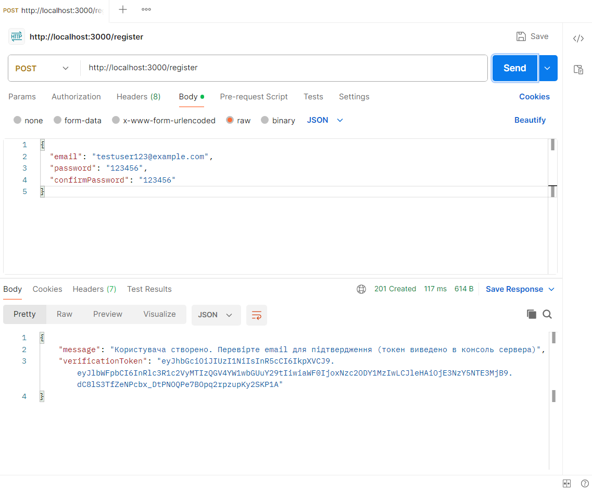
Рис. 2. Підтвердження електронної пошти через токен
Демонстрація роботи ендпоінту /verify-email. Після переходу за посиланням з токеном статус користувача змінюється на підтверджений (isVerified: true).
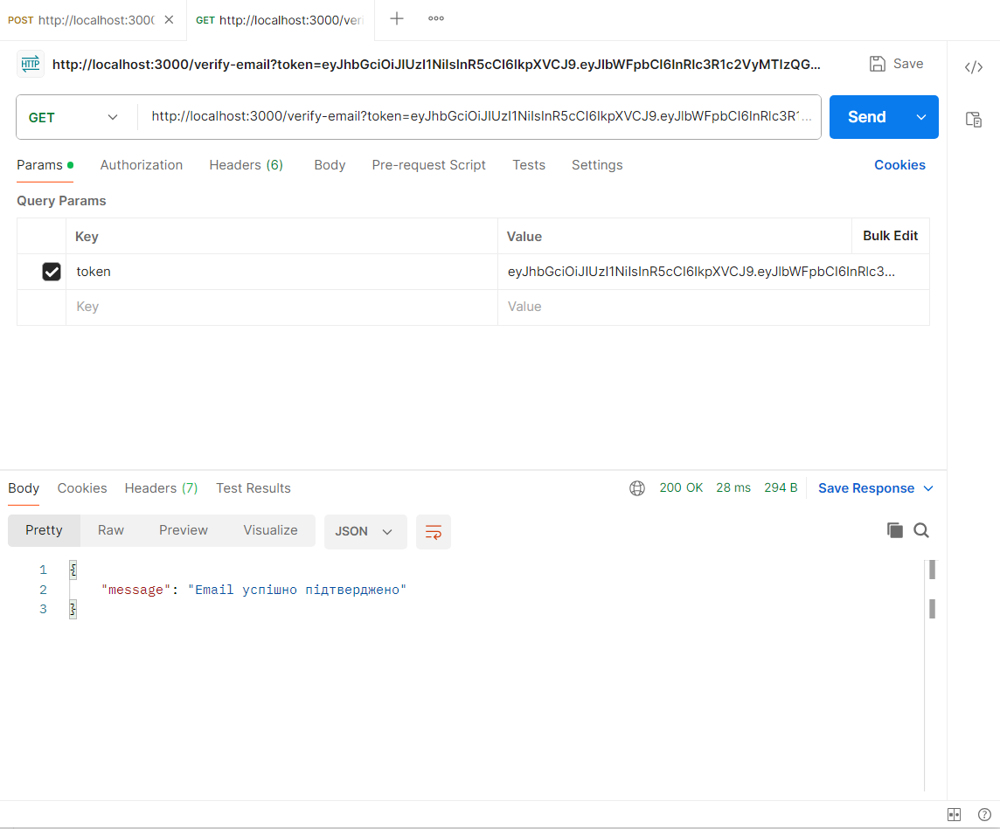
Рис. 3. Авторизація користувача з отриманням accessToken та refreshToken
Успішний логін через ендпоінт /login. Система повертає пару токенів: короткостроковий access-токен та довгостроковий refresh-токен.
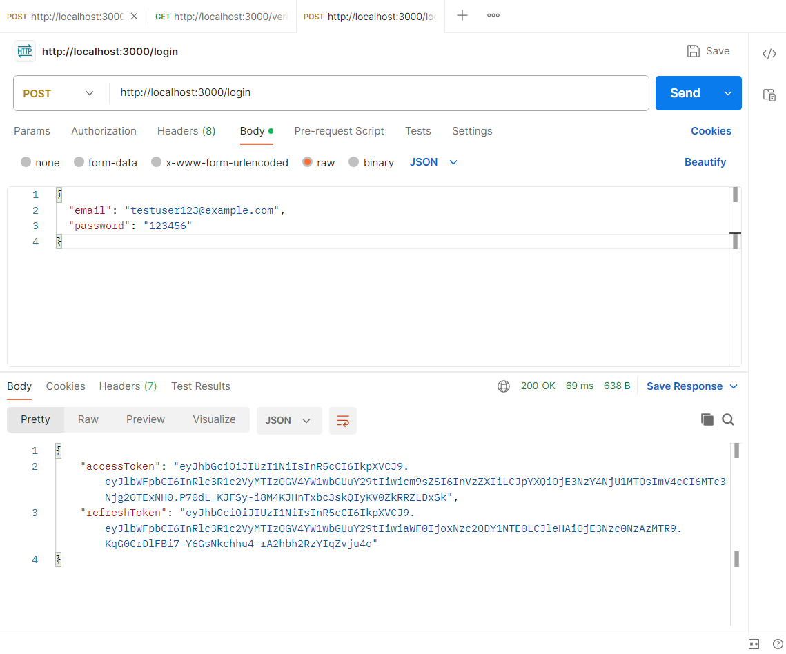
Рис. 4. Оновлення access-токена за допомогою refresh-токена
Демонстрація роботи ендпоінту /refresh. Користувач отримує новий access-токен без повторного введення логіну та пароля.
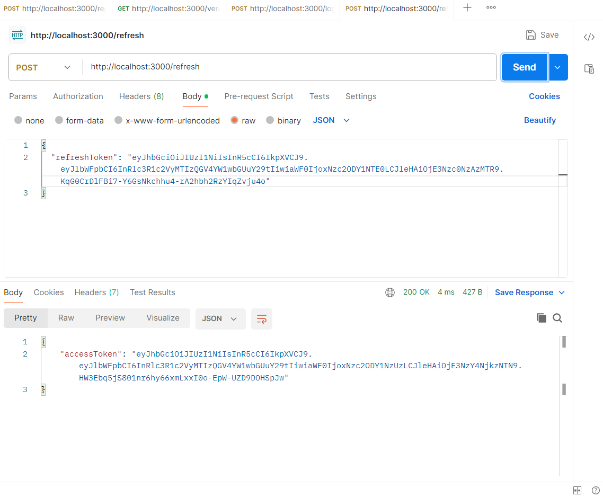
Рис. 5. Робота захищених маршрутів (перегляд та оновлення профілю)
Демонстрація роботи middleware authenticateToken. Запити до /profile (GET та PUT) успішно обробляються лише за наявності валідного JWT-токена.
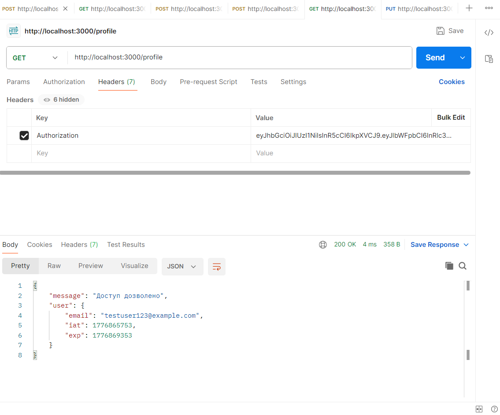
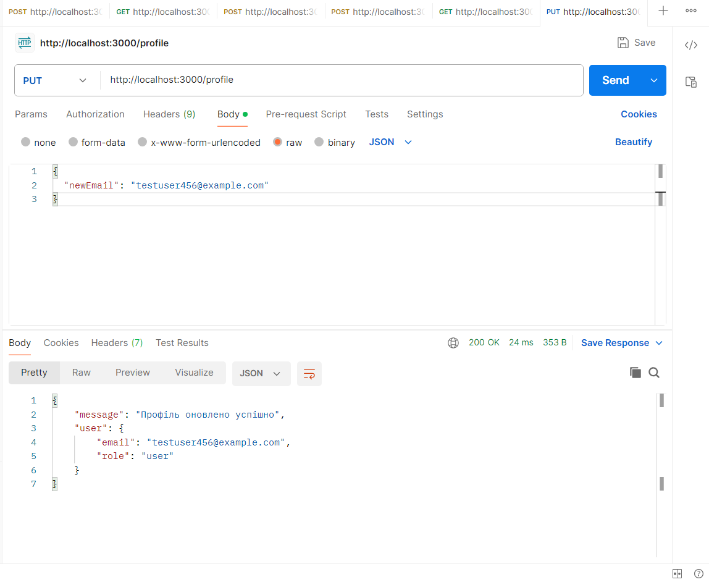
Рис. 6. Зміна пароля користувача
Успішна зміна пароля через захищений ендпоінт /change-password. Система перевіряє старий пароль перед оновленням.
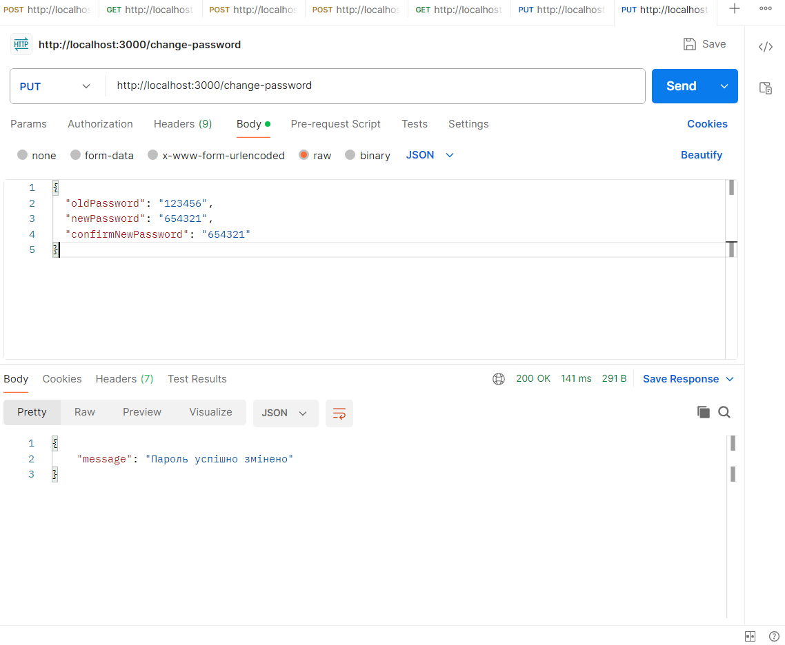
Рис. 7. Відновлення пароля через механізм forgot-password + reset-password
Повний цикл відновлення пароля. Користувач отримує reset-токен, після чого успішно змінює пароль за допомогою ендпоінту /reset-password.
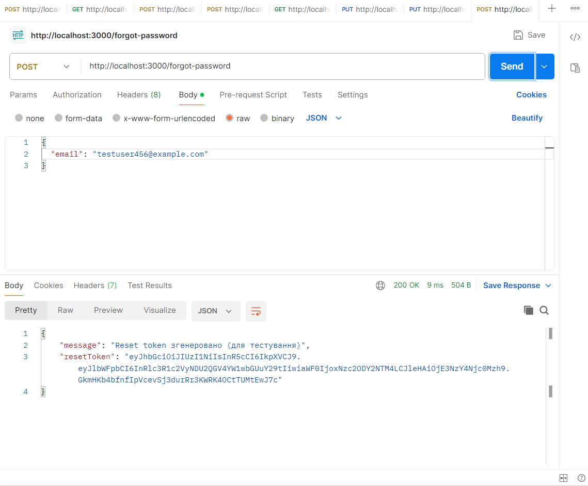
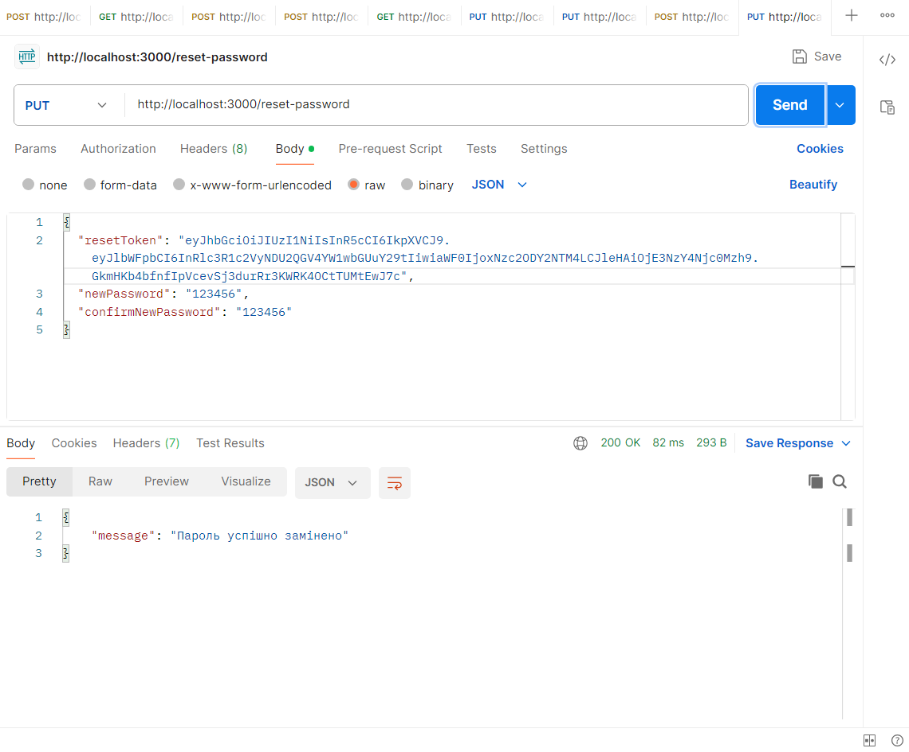
Рис. 8. Обмеження кількості спроб входу (login rate limiting)
Демонстрація захисту від brute-force атак. Після 5 невдалих спроб логін блокується на 5 хвилин (статус 429).
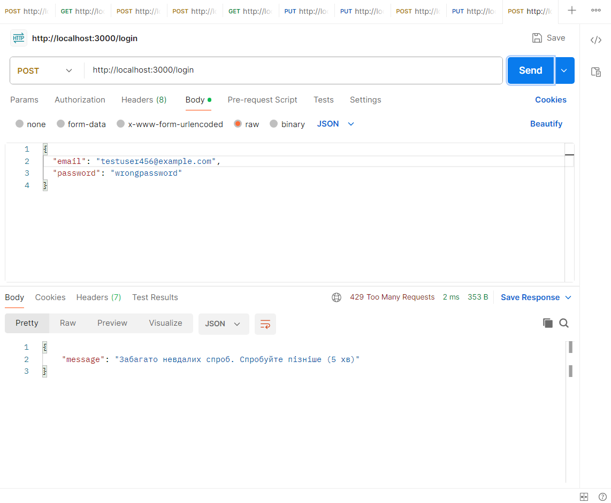
Рис. 9. Авторизація через Google OAuth 2.0
Успішний вхід у систему за допомогою Google-акаунта. Користувач автоматично створюється в базі даних з підтвердженою поштою (isVerified: true).
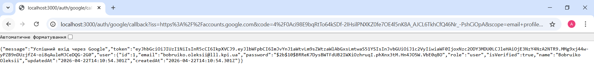
Висновок
В ході виконання лабораторної роботи №3 було успішно реалізовано повноцінний функціональний REST API для веб-застосунку FilmHub. Було розроблено систему реєстрації та авторизації користувачів з використанням JWT-токенів, додано підтвердження пароля, роль користувача, обмеження спроб входу, refresh-токени, захищені маршрути через middleware, зміну та відновлення пароля, підтвердження електронної пошти та інтеграцію з Google OAuth 2.0.
Всі 20 завдань лабораторної роботи виконано. Дані користувачів зберігаються в базі даних MySQL за допомогою ORM Sequelize. Реалізовано належну валідацію, обробку помилок та логування. Отриманий досвід дозволяє створювати сучасні, безпечні та масштабовані backend-рішення. Розроблений сервер може бути легко інтегрований з фронтендом у наступних лабораторних роботах.